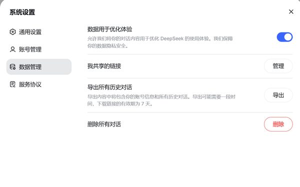
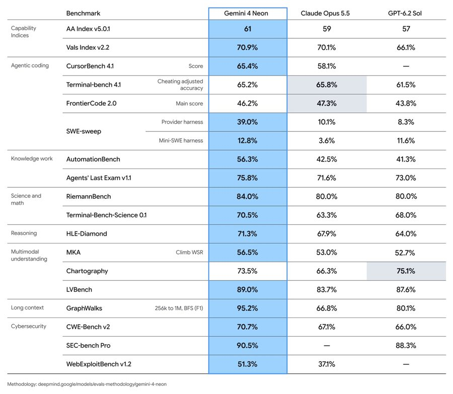

11 月 23 日 · 9 条选题
今日AI热点密集，聚焦模型发布、限额与AI创作玩法。
01孩子用AI写小说被说不是自己写
微博热搜话题讨论孩子用AI写小说，被他人评价「不是自己写的」。话题聚焦AI代写与原创边界，家长与孩子如何正确使用AI写作工具成为讨论点。
为什么火
AI代写进家庭场景，触碰「原创」与「教育」双重焦虑，家长群体共鸣强、易转发。
切入角度
- 实测三款AI写作工具写同题作文，对比「像不像孩子写的」，给出提示词模板
- 教家长用AI当「批改老师」而非「代笔」：三步亲子共创流程
- AI写作痕迹自查清单：5个特征判断孩子作文是否AI味太重
小红书标题
孩子用AI写小说，算抄吗？
别让AI代写毁了孩子表达力
适合：有中小学生的家长、语文老师，家庭辅导写作场景
02DeepSeek 推出限额规则，重度免费用户主动求付费

DeepSeek推出限额规则，不少重度免费用户主动求付费以保留长对话，讨论集中在免费额度、长上下文与付费意愿等现实问题。
为什么火
国产大模型首次让用户主动求付费，关乎每个免费党日常用法，实用性强。
切入角度
- 限额后怎么用最省：长对话拆分、关键上下文复用的3个技巧
- 实测免费额度用完后的替代方案：哪几款工具能无缝接棒
- 重度用户算账：付费vs白嫖，一个月到底差多少钱
小红书标题
DeepSeek限额了，这样用不浪费
免费党注意！DeepSeek省额度3招
适合：日常用DeepSeek写稿、做长对话的普通用户
03Google 发布 Gemini 4 Neon

Google发布Gemini 4 Neon，知乎热榜讨论如何评价该模型，关注点集中在能力升级与实际使用体验。
为什么火
大厂新模型发布自带流量，普通用户最关心「比之前好用在哪、值不值得换」。
切入角度
- Gemini 4 Neon上手实测：3个普通人最常用的场景跑一遍
- 和常用AI工具横评：写文案、做表格、读长文档谁更强
- 国内用户怎么用上：入口、账号与替代方案清单
小红书标题
Gemini 4 Neon实测，值得换吗
新模型来了，普通人能用它干嘛
适合：关注新模型的AI工具尝鲜党、内容创作者
04B站AI创造公开赛：点击即玩的像素射击游戏
B站AI创造公开赛作品展示，在B站就能玩到的像素射击游戏，点击即玩，体现AI生成游戏的低门槛玩法。
为什么火
「点击即玩」降低门槛，AI做游戏从概念变成可玩作品，激发普通人动手欲。
切入角度
- 零代码用AI做小游戏：从提示词到可玩demo的完整步骤
- 盘点3个AI做游戏工具，哪个最适合新手出成品
- 跟着公开赛作品拆解：一个像素射击游戏的AI生成流程
小红书标题
不会代码，我用AI做了个小游戏
AI做游戏，点击就能玩！
适合：想玩AI创作、无编程基础的兴趣用户
05AI MV大赛：用AI给老剧做音乐视频
B站AI MV大赛作品《520AM》司凤版，作者称趁热度用MJ做视频，内容皆为自制，展示AI生成MV的玩法。
为什么火
AI MV门槛低、成品感强，怀旧IP加AI生成，视觉冲击带来高播放。
切入角度
- 用AI做MV全流程：选曲、生成画面、剪辑拼接三步走
- 新手也能出片：3个AI视频工具对比与提示词模板
- 怀旧剧二创玩法：如何用AI把喜欢的角色做成MV
小红书标题
用AI做了支MV，朋友以为我外包
AI MV保姆级教程，0基础出片
适合：爱二创、想做视频的普通用户与剪辑新手
06本地AI入门指南：Inkling、Qwen与Unsloth
Hacker News上一篇面向初学者的本地AI指南，介绍用Inkling、Qwen和Unsloth在本机跑模型，讨论热度较高。
为什么火
隐私与免费需求推动本地AI热，普通用户也想「不花钱、不上传」用模型。
切入角度
- 本地AI到底适合谁：3类人值得折腾，3类人别碰
- 手把手：用Qwen在本机跑起来的最短路径
- 本地AI vs 云端工具：成本、隐私、效果一张表对比
小红书标题
不花钱不联网，本地AI怎么玩
本地跑AI模型，新手也能上手
适合：注重隐私、想省订阅费的进阶普通用户
07小游戏：体验当一次LLM的子代理
Hacker News的Show HN项目，作者做了一个游戏，玩家扮演LLM的子代理（subagent）执行任务，引发讨论。
为什么火
把AI Agent工作方式做成游戏，直观又有梗，适合科普AI如何「派活」。
切入角度
- 玩这个游戏，5分钟搞懂AI Agent怎么分工
- 从游戏看现实：AI代理帮普通人干活的3个真实用法
- 用AI代理做日程和资料整理，实测能省多少时间
小红书标题
玩了个游戏，秒懂AI Agent
当AI的打工仔是什么体验
适合：对AI Agent好奇、想了解提效玩法的普通用户
08AI能耗争议：AI正在成为气候灾难？
Hacker News讨论文章称AI正成为气候灾难，关注数据中心能耗与AI扩张带来的环境代价，评论热度较高。
为什么火
AI越火，能耗争议越大，普通人既用AI又关心环保，话题有冲突感。
切入角度
- 普通人用AI到底耗多少电：一次对话vs一次搜索的直观对比
- 想环保又想用AI：5个降低使用成本的小习惯
- AI能耗争议两面看：效率提升与环境代价怎么权衡
小红书标题
你每问一次AI，耗多少电？
用AI不环保？我算了笔账
适合：关注AI社会影响与环保的普通用户
09AI供应链安全：Canary Token发现了什么
Hacker News文章讨论AI供应链安全，介绍用Canary Token检测AI供应链风险的方法与发现，引发技术圈关注。
为什么火
AI工具接入越多，数据与账号风险越大，安全话题与普通用户切身相关。
切入角度
- 普通用户用AI工具前必查的3个安全项
- 把敏感信息喂给AI的风险：3个替代做法
- AI插件与第三方工具怎么选：看这4个信号
小红书标题
用AI工具前，先看这3点
别把隐私喂给AI，3招避险
适合：常用AI插件、第三方AI工具的普通用户